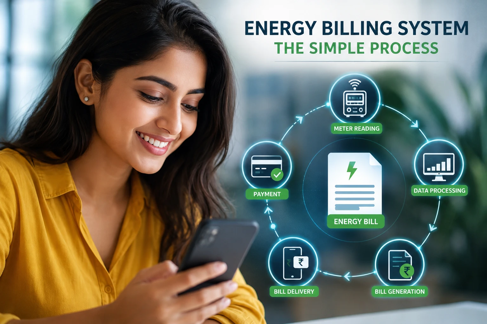
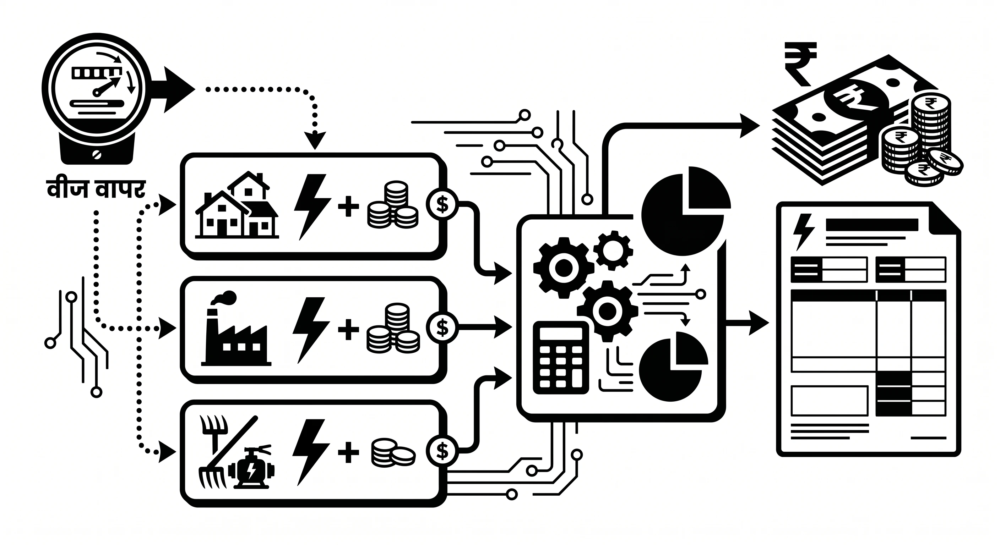
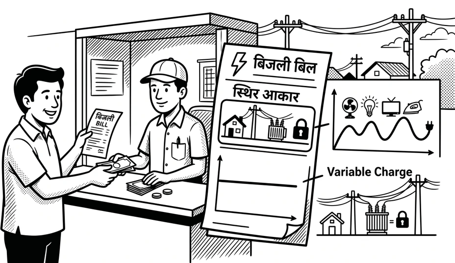
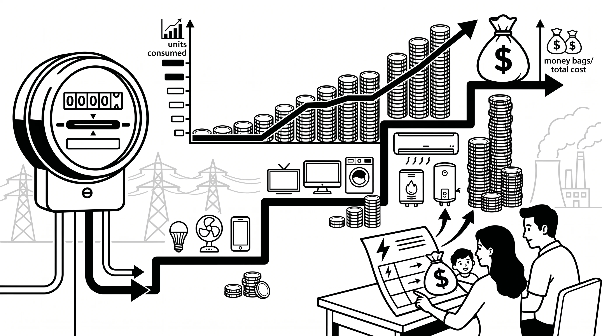
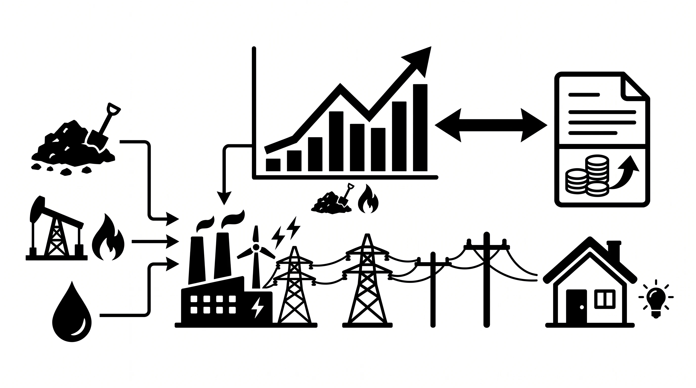
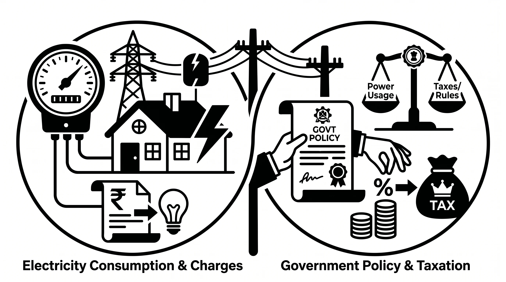

परिचय
महावितरणची बिलिंग प्रक्रिया नेमकी कशी काम करते, याबाबत वीज ग्राहकांमध्ये नेहमीच उत्सुकता असते. लाखो ग्राहकांना अखंडित वीज सेवा देताना, प्रत्येकाच्या वीज वापराचे अचूक मोजमाप करणे आणि वेळेवर बिलिंग करणे हे एक अत्यंत गुंतागुंतीचे परंतु शिस्तबद्ध असे काम आहे.
अनेकदा ग्राहकांच्या मनात वीज बिल तयार करण्याच्या प्रक्रियेबाबत शंका असतात. या लेखामध्ये आम्ही मीटर रीडिंग घेण्यापासून ते प्रत्यक्ष बिल हातात मिळेपर्यंतच्या सर्व तांत्रिक टप्प्यांची माहिती सोप्या भाषेत देण्याचा प्रयत्न केला आहे.
एनर्जी बिलिंग सिस्टीम म्हणजे नक्की काय?

Key Takeaways
- बिलाच्या तांत्रिक संरचनेचे ज्ञान हे ग्राहकांना त्यांच्या वीज खर्चाचे अचूक नियोजन करण्यास मदत करते.
वीज ग्राहकाच्या बिलामध्ये अनेक तांत्रिक शब्दांचा वापर केलेला असतो. कारण आपल्याला मिळणारी वीज फक्त एका बटनावर मिळणारी सेवा नसते, तर ती एक जटिल तांत्रिक प्रक्रियेचा भाग असते. ज्यामध्ये वीज निर्मिती, वहन आणि वितरण या तीन स्तरांची रचना बिल आकारणीसाठी कारणीभूत असते.
वीज बिल संरचनेचे मुख्य घटक
- 1 निश्चित खर्च: ग्राहक वीज वापरत असो वा नसो, त्याचा वीज पुरवठा यंत्रणा कार्यान्वित ठेवण्यासाठी कंपनीला येणारा खर्च निश्चित समजला जातो.
- 2 चल खर्च: यामध्ये प्रत्यक्ष युनिटच्या वापरानुसार बदलणारा खर्च समाविष्ट होतो.
- 3 प्रशासकीय आणि वैधानिक शुल्क: शासनाद्वारे लावले जाणारे कर आणि शुल्क यामध्ये समाविष्ट होतात.
तांत्रिक संरचना आणि वर्गवारी यांची भूमिका
वीज बिलाची आकारणी ही वर्गवारी (Tariff) प्रणालीवर आधारित असते. महाराष्ट्र विद्युत नियामक आयोग (MERC) सारख्या संस्था दरवर्षी किंवा ठराविक काळाने हे दर निश्चित करतात. ही दर संरचना ठरवताना ग्राहकाचे वर्गीकरण महत्त्वाचे ठरते.
यामध्ये घरगुती, वाणिज्यिक (व्यावसायिक), औद्योगिक, कृषी आणि इतर वर्गवारी निश्चित केल्या जातात. या प्रत्येक वर्गवारीसाठी तांत्रिक निकष आणि प्रति युनिट दर देखील वेगळे असतात.
विजेच्या मोजमापाचे गणित
तुमच्या वीज बिलाचा पाया हा मुख्यतः Kilowatt Hour किंवा kWh या घटकावर अवलंबून असतो. जसे की, जेव्हा आपण 1 किलोवॅट (किंवा 1000 वॅट) क्षमतेचे उपकरण 1 तास सतत चालवतो, त्यावेळी 1 युनिट वीज खर्च होते.
तसेच वीज बिलाच्या तांत्रिक संरचनेमध्ये "कनेक्टेड लोड" आणि "कॉन्ट्रॅक्ट डिमांड" यांची भूमिका देखील महत्वाची असते.
- 1 कनेक्टेड लोड: कनेक्टेड लोड म्हणजे ग्राहकाच्या वीज पुरवठ्यासाठी जोडलेल्या सर्व उपकरणांची एकूण निर्धारित क्षमता होय. ही क्षमता kW आणि kVA मध्ये मोजली जाते.
किलोवॅट (kW) म्हणजे Real Power (वास्तविक शक्ती) जी प्रत्यक्ष काम करते, म्हणजेच, तुम्ही वापरत असलेली उपयोगी वीज किंवा प्रत्यक्ष वापरली जाणारी ऊर्जा = kW.
किलोवोल्ट अँपिअर (kVA) म्हणजे Apparent Power (दृश्यमान शक्ती) जी प्रत्यक्ष काम करत नाही पण सिस्टममध्ये फिरत राहते, म्हणजेच पुरवली जाणारी एकूण ऊर्जा = kVA - 2 कॉन्ट्रॅक्ट डिमांड: कॉन्ट्रॅक्ट डिमांड (Contract Demand) म्हणजे ग्राहकाने अधिकृतपणे ठराविक आणि मर्यादित वीज लोड वापरण्यासाठी केलेला करार किंवा कॉन्ट्रॅक्ट होय. वीज वितरण यंत्रणेचे सुयोग्य नियोजन, स्थिर व्होल्टेज राखणे आणि ओव्हरलोड टाळणे यासाठी कॉन्ट्रॅक्ट डिमांडचे विशेष महत्त्व आहे.
वीज बिल केवळ वापरलेल्या युनिट्सवर ठरत नाही, तर यामध्ये Contract Demand आणि Maximum Demand यांचाही त्यावर प्रभाव असतो. उदा. जर प्रत्यक्ष वापर हा कॉन्ट्रॅक्ट डिमांडपेक्षा जास्त झाला, तर त्या अतिरिक्त मागणीवर Excess Demand Charges आकारले जातात, ज्यामुळे बिल वाढू शकते.
तुम्हाला वीज बिलाचं गणित समजलं का? नसेल तर, UrjaPlus शी नक्की संपर्क साधा!
एनर्जी बिलिंग सिस्टीमची संपुर्ण प्रक्रिया.

Key Takeaways
- मीटर रीडिंगपासून ते बिल जनरेशनपर्यंतची प्रत्येक पायरी अत्याधुनिक आणि पूर्णपणे मॅप केलेली असते.
महावितरणची संपूर्ण बिलिंग यंत्रणा एका सुनियोजित आणि तांत्रिक सायकलमध्ये कार्य करते. वीज पुरवठा सुरू झाल्यापासून ते प्रत्यक्ष बिल तयार होऊन ते ग्राहकांपर्यंत पोहोचवण्याच्या प्रक्रियेमध्ये अत्याधुनिक प्रणालींचा वापर केला जातो. ही संपूर्ण प्रक्रिया खालील 8 मुख्य टप्प्यांमध्ये विभागलेली आहे:
- 1 नवीन वीज जोडणी सोबत ग्राहकाच्या माहितीचे अपडेशन: नवीन ग्राहक प्रणालीत समाविष्ट होताच त्याची संपूर्ण वैयक्तिक माहिती, मंजूर लोड, आणि मीटरचा युनिक आयडी मध्यवर्ती सर्व्हरवर अचूकपणे अपडेट केला जातो.
- 2 मीटर रीडिंगचे संकलन: दरमहा ठराविक कालावधीत मीटर रीडर मोबाईल अॅप किंवा एमआरआय यंत्राद्वारे चालू रीडिंग गोळा केले जाते. आधुनिक स्मार्ट मीटरच्या बाबतीत हा डेटा थेट रिअल-टाइम स्वरूपात सिस्टीममध्ये जमा होतो.
- 3 डेटा प्रोसेसिंग आणि डेटा व्हॅलिडेशन प्रक्रिया: गोळा केलेला डेटा मुख्य सर्व्हरवर तपासला जातो. यामध्ये मागील महिन्यांच्या वीज वापराशी तुलना करून कोणतीही मोठी तफावत किंवा मानवी चूक नाही ना, याची पडताळणी सिस्टीमद्वारे स्वयंचलितपणे तसेच तज्ज्ञ बिलिंग कर्मचारी यांच्यामार्फत केली जाते.
- 4 ग्राहक वर्गवारीनुसार बिल कॅल्क्युलेशन पद्धती: एमईआरसीच्या नियमांनुसार घरगुती, व्यावसायिक किंवा औद्योगिक अशा ठरवून दिलेल्या वर्गवारी आणि स्लॅब रेटनुसार (Tariff Slabs) बिलाचे अचूक गणित मांडले जाते.
- 5 वीज बिल निर्मिती वितरणाची कार्यवाही: सर्व तांत्रिक गणना पूर्ण झाल्यानंतर डिजिटल स्वरूपात फायनल बिल पीडीएफ जनरेट होते. हे बिल कागदी स्वरूपात ग्राहकांपर्यंत पोहोचवले जाते, तसेच एसएमएस आणि ईमेलद्वारे त्वरित अलर्ट दिला जातो.
- 6 प्रथम बिल लेखा परीक्षण: ग्राहकास प्रथम बिल दिल्यानंतर हे बिल योग्य आहे किंवा नाही याची पडताळणी केली जाते, यामध्ये ग्राहकाचा वास्तविक वीज पुरवठा दिला आहे किंवा नाही, मीटर रिडींगची दृश्यमानता, ग्राहकाचे नाव व पत्ता, वर्गवारी, जोडभार, रिडींग ग्रुप इत्यादी पॅरामीटर्स तपासले जातात.
- 7 बिल भरणा प्रकार व पद्धती: ग्राहकांच्या सुविधेसाठी विविध ऑनलाईन (UPI, नेट बँकिंग, महावितरण अॅप) आणि ऑफलाईन पेमेंट काउंटरची व्यवस्था उपलब्ध करून दिली जाते.
महावितरणची ही क्लिष्ट वाटणारी तांत्रिक प्रक्रिया तुम्हाला सोयीची वाटते का?
बिलिंगमधील ग्राहकांच्या सामान्य समस्या

Key Takeaways
- बिलिंगमधील समस्या तांत्रिक असू शकतात, मात्र वेळेवर घेतलेला योग्य निर्णय मोठा आर्थिक भुर्दंड टाळू शकतो.
बिलिंग प्रक्रिया जरी स्वयंचलित असली तरी काही वेळा तांत्रिक, भौगोलिक किंवा मानवी कारणांमुळे ग्राहकांना खालील सामान्य समस्यांचा सामना करावा लागतो:
- 1 जास्त वीज बिल येण्याची समस्या: घरात अचानक झालेला वीज वापर, उपकरणांमधील तांत्रिक बिघाड किंवा चुकीच्या स्लॅब आकारणीमुळे अनेकदा ग्राहकांना अवाजवी बिल येते.
- 2 सरासरी बिलिंगबाबतची प्रश्न: घर बंद असणे किंवा मीटर सुरक्षित जागेत नसल्यामुळे रीडिंग घेता आले नाही तर सिस्टीम मागील वापराच्या आधारे सरासरी (Average) बिल जनरेट करते, ज्यामुळे संभ्रम निर्माण होतो.
- 3 चुकीची रीडिंग होण्याची गुंतागुंत: मीटर रीडरकडून घाईगडबडीत चुकीचे आकडे अॅपमध्ये नोंदवले गेल्यास प्रत्यक्ष वापरापेक्षा खूप वेगळे बिल तयार होते.
- 4 मीटर सदोष असण्याचा मूळ मुद्दा: मीटर तांत्रिकदृष्ट्या संथ (Slow) किंवा वेगाने (Fast) चालत असल्यास अथवा स्क्रीन बंद (Faulty/Jumped) असल्यास अचूक वापराची नोंद होत नाही.
- 5 चुकीची वर्गवारी लागू होण्याची पेच: घरगुती वापराच्या जागेवर चुकून व्यावसायिक (Commercial) दरांची आकारणी सिस्टीममध्ये झाल्यास बिलाची रक्कम मोठ्या प्रमाणावर वाढते.
तुमच्याही बिलावर अशा प्रकारची कोणती त्रुटी किंवा कोड दिसत आहे का?
एनर्जी बिलिंग सिस्टीमचे फायदे

Key Takeaways
- अत्याधुनिक आणि गतिमान डिजिटल सिस्टीममुळे मानवी चुकांना आळा बसून ग्राहकांचा विश्वास वाढला आहे.
संगणकीकृत आणि स्वयंचलित एनर्जी बिलिंग सिस्टीम स्वीकारल्यामुळे वीज वितरण व्यवस्थेत कमालीची सुधारणा झाली आहे. याचे मुख्य फायदे खालीलप्रमाणे आहेत:
- अचूक बिलिंग म्हणजे कमी त्रास: मानवी हस्तक्षेपाशिवाय थेट डेटा प्रोसेसिंग होत असल्याने आकडेमोडीतील चुका पूर्णपणे नष्ट झाल्या आहेत आणि बिलांमध्ये अचूकता आली आहे.
- वेळेची बचत करणारे नवीन तंत्रज्ञान: पेपरलेस आणि डिजिटल बिलिंग प्रणालीमुळे ग्राहकांना घरबसल्या काही सेकंदांत बिल प्राप्त होते, ज्यामुळे वेळेची मोठी बचत होते.
- ऑनलाइन पारदर्शकतेमुळे पूर्ण नियंत्रण: ग्राहक आपल्या खात्यावरील वापराचा इतिहास (Consumption History) आणि मागील बिलांचा तपशील कधीही ऑनलाईन तपासू शकतात, ज्यामुळे पूर्ण पारदर्शकता राहते.
- कार्यक्षम महसूल नियंत्रण: वितरण कंपनीला मिळणारा महसूल वेळेत आणि थेट बँकेत जमा होत असल्याने वीज यंत्रणेच्या देखभालीसाठी लागणारा निधी योग्य वेळेत उपलब्ध होतो.
- डेटा अॅनालिटिक्स क्रांती: प्रत्येक भागातील विजेच्या मागणीचा आणि पुरवठ्याचा अचूक डेटा उपलब्ध होत असल्याने भविष्यातील लोड शेडिंग आणि वीज वितरणाचे सुयोग्य नियोजन करणे शक्य झाले आहे.
या डिजिटल आणि पारदर्शक सिस्टीममुळे तुम्ही समाधानी आहेत का?
वीज ग्राहकांनी काय करावे आणि काय टाळावे?

Key Takeaways
- जबाबदार नागरिक म्हणून नियमांचे अचूक पालन केल्यास कायदेशीर आणि आर्थिक संकटांपासून कायम दूर राहता येते.
ग्राहकांनी वीज बिलाचा अतिरिक्त भुर्दंड टाळण्यासाठी आणि वीज उपकरणांच्या सुरक्षिततेसाठी खालील गोष्टींची काळजी घेणे अत्यंत गरजेचे आहे:
| काय करावे | काय टाळावे |
|---|---|
| दरमहा बिलावरील रीडिंग आणि प्रत्यक्ष मीटर स्क्रीनवरील रीडिंग तपासावे. | मीटर किंवा मुख्य सर्व्हिस केबलशी कोणत्याही प्रकारची छेडछाड करू नये. |
| सवलतीचा लाभ घेण्यासाठी देय तारीख (Due Date) पूर्वी बिलाचा ऑनलाईन भरणा करावा. | मंजूर लोडपेक्षा (Sanctioned Load) अधिक वीज वापरणे अधिकृत मंजुरीशिवाय टाळावे. |
| नवीन मोठे उपकरण जोडताना महावितरणकडे लोड वाढवण्यासाठी रीतसर अर्ज करावा. | बिल चुकीचे वाटल्यास संपूर्ण पेमेंट बंद न करता तात्काळ तक्रार नोंदवावी. |
| अचूक रीडिंगसाठी मीटर बॉक्स स्वच्छ आणि सहज उपलब्ध राहील अशा ठिकाणी ठेवावा. | अनोळखी किंवा अनधिकृत लिंक आणि अॅप्सद्वारे वीज बिल भरणे टाळावे. |
एक सजग ग्राहक म्हणून तुम्ही या सर्व नियमांचे नियमित पालन करता का?
महत्त्वाचे निष्कर्ष
आधुनिक एनर्जी बिलिंग प्रणाली ही अत्याधुनिक केंद्रीय सर्व्हरवर आधारित असून पूर्णपणे सुरक्षित व स्वयंचलित आहे.
मीटर रीडिंग संकलनापासून ते वितरणापर्यंतच्या प्रत्येक टप्प्यावर कडक तांत्रिक पडताळणी केली जाते.
ग्राहकांना ऑनलाइन पारदर्शकतेमुळे त्यांच्या मासिक वीज खर्चाचे आणि वापराचे अचूक ट्रॅकिंग करणे शक्य झाले आहे.
People Also Ask
मीटर रीडिंगचे संकलन, केंद्रीय सर्व्हरवर डेटा व्हॅलिडेशन, ग्राहक वर्गवारीनुसार (घरगुती/व्यावसायिक) स्लॅब रेटची आकारणी, उपविभागीय मंजुरी आणि शेवटी डिजिटल बिल जनरेशन व वितरण यांचा समावेश होतो.
स्थिर आकार (Fixed Charge) हा वीज पायाभूत सुविधा कायमस्वरूपी कार्यरत ठेवण्यासाठी आकारला जातो. ग्राहक वीज वापरत असो वा नसो, उपकेंद्रे, खांब, ट्रान्सफॉर्मर आणि वायर्सची देखभाल करण्यासाठी वितरण कंपनीला येणारा खर्च भागवण्यासाठी हा निश्चित आकार लावला जातो.
महावितरणच्या अधिकृत Consumer Portal वर जाऊन चालू महिन्याचे बिल डिजिटल स्वरूपात अत्यंत सहजपणे तपासू आणि डाउनलोड करू शकता.
वीज बिल वेळेत न भरल्यास सुरुवातीला बिलाच्या रकमेवर विलंब आकार (DPC) लावला जातो. त्यानंतरही देय मुदतीत बिल न भरल्यास नियमानुसार व्याज आकारणी सुरू होते आणि अधिकृत पूर्वसूचना देऊन ग्राहकाचा वीज पुरवठा तात्पुरता खंडित (Disconnect) केला जाऊ शकतो.
घर बंद असल्यामुळे किंवा मीटर सुरक्षित/अडचणीच्या जागेत असल्यामुळे मीटर रीडरला प्रत्यक्ष रीडिंग घेता येत नाही, तेव्हा सिस्टीम मागील सरासरी वापराच्या आधारे अंदाजे (Average Bill) बिल काढते. पुढील महिन्यात प्रत्यक्ष रीडिंग उपलब्ध झाल्यावर या बिलाचे अचूक समायोजन केले जाते.